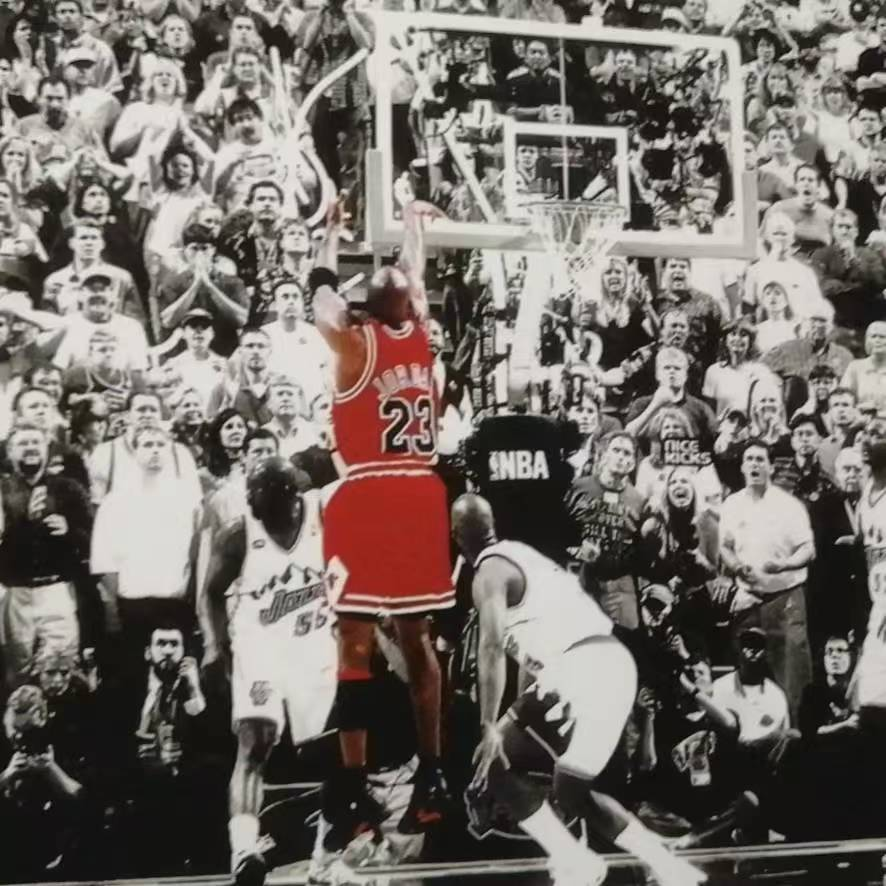

陈子昊
具体介绍
我叫陈子昊，今年19岁，目前就读于北京理工大学计算机学院，年级大二。我的代码基础目前为零，正在从最基本的知识开始学习。平时喜欢玩游戏，主要是《文明6》等单机游戏；喜欢打篮球，不过水平还不算高；也喜欢阅读，科幻、古典等类型都会读一点。在小组项目中，我承担程序员的任务，负责骰子设计与任务交互、事件触发逻辑、角色属性等内容，希望在实践中逐步理解程序设计，把想法变成能够运行的体验。

我叫陈子昊，今年19岁，目前就读于北京理工大学计算机学院，年级大二。我的代码基础目前为零，正在从最基本的知识开始学习。平时喜欢玩游戏，主要是《文明6》等单机游戏；喜欢打篮球，不过水平还不算高；也喜欢阅读，科幻、古典等类型都会读一点。在小组项目中，我承担程序员的任务，负责骰子设计与任务交互、事件触发逻辑、角色属性等内容，希望在实践中逐步理解程序设计，把想法变成能够运行的体验。